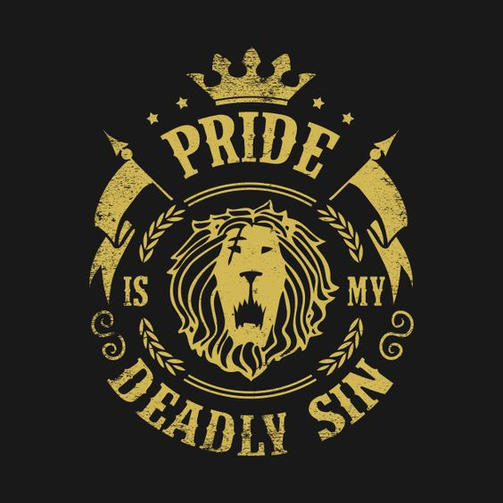

7 Deadly Sins
Pioneer
of
7 Deadly Sins
I'm the seed of self-ruin
Let us introduce ourself
Pride
Avarice
Envy
Wrath
Lust
Gluttony
Sloth
Our other names
Capital Vices
Cardinal Sins
Seven Evil Thoughts
These "evil thoughts" can be categorized into 3 types
Origin
Recognized as
Gula
gluttony
Irascibility
wrath
Mind Corruption
vainglory, sorrow, pride, and discouragement